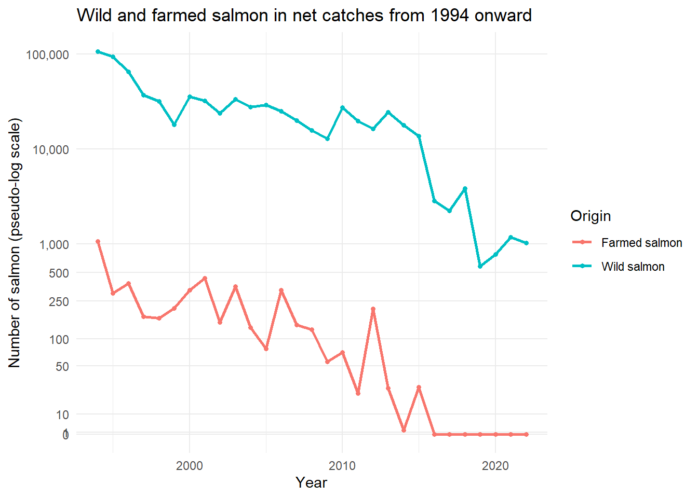
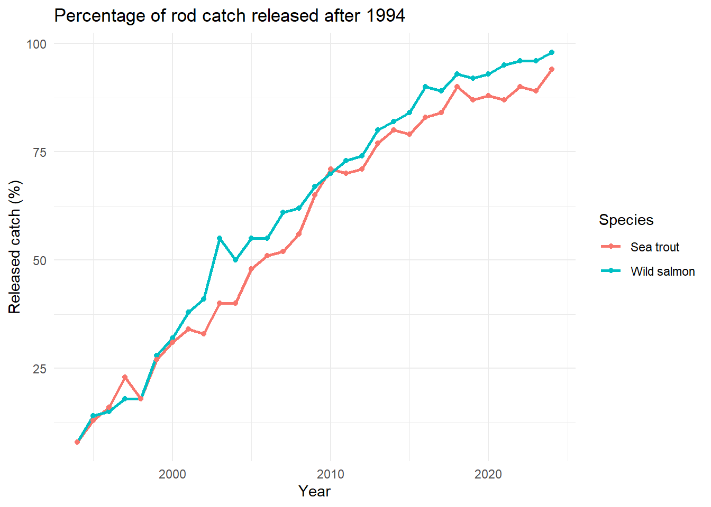
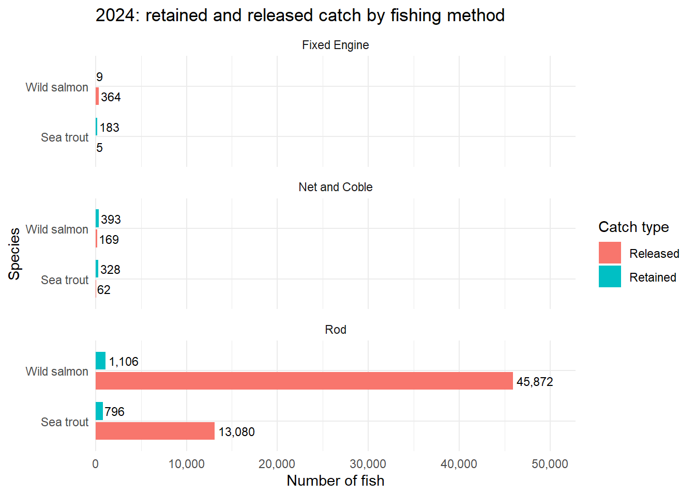
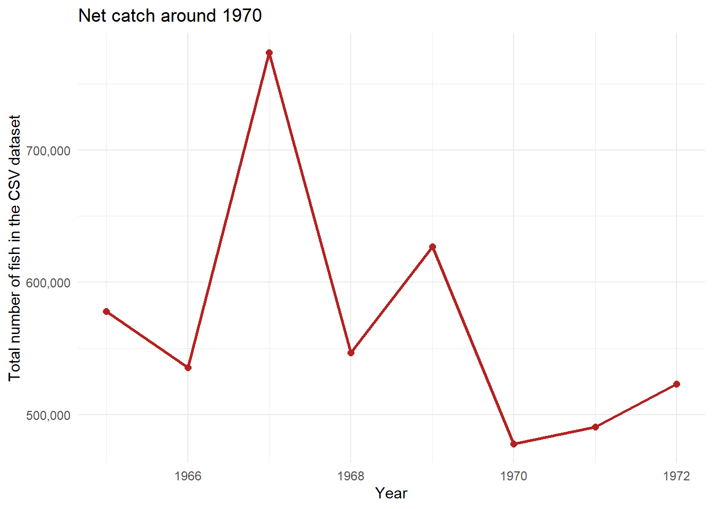
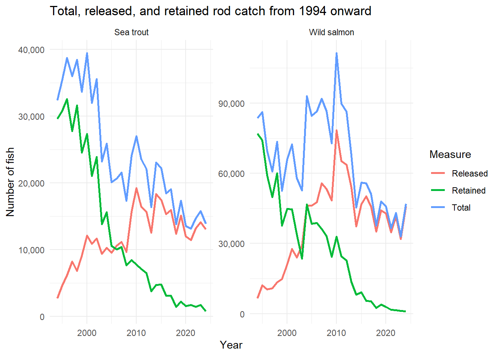

library(tidyverse)
library(readODS)
csv_path <- "datasets/SalmonandSeaTroutNets1952-2022.csv"
ods_path <- "datasets/2024-scottish-salmon-sea-trout-statistics-supplementary-tables.ods"
net_raw <- read_csv(csv_path, show_col_types = FALSE)
is_blank <- function(x) {
is.na(x) | str_trim(as.character(x)) == ""
}
read_ods_table <- function(sheet, skip) {
read_ods(ods_path, sheet = sheet, skip = skip, col_names = TRUE) |>
rename_with(str_squish) |>
select(where(~ !all(is_blank(.x)))) |>
filter(!if_all(everything(), is_blank))
}
to_number <- function(x) {
x_chr <- as.character(x)
x_chr[str_detect(x_chr, "^\\[note")] <- NA_character_
parse_number(x_chr, locale = locale(grouping_mark = ","))
}
salmon_rod_raw <- read_ods_table("Table_1", skip = 2)
salmon_net_2024_raw <- read_ods_table("Table_2", skip = 3)
salmon_all_2024_raw <- read_ods_table("Table_5", skip = 3)
farmed_2024_raw <- read_ods_table("Table_6", skip = 3)
trout_rod_raw <- read_ods_table("Table_7", skip = 2)
trout_net_2024_raw <- read_ods_table("Table_8", skip = 4)
trout_all_2024_raw <- read_ods_table("Table_11", skip = 3)Analysis of Scottish Salmon and Sea Trout Catches
Wild versus farmed fish and the shift from retained catch to catch-and-release
1 Introduction / Problem Description
This project analyses catch statistics for salmon and sea trout in Scotland. The analysis focuses on two related questions. The first is the distinction between wild and farmed salmon, because the data separates Wild MSW, Wild 1SW, Farmed MSW, and Farmed 1SW. The second is the change in fishing practice: how many fish were retained as catch, and how many were caught and then released.
The main research question is:
Does the data show that Scottish salmon and sea trout fisheries have shifted from retained catch toward catch-and-release, while farmed salmon remain only a very small part of the recorded catch?
The analysis uses two data sources. The first is a Kaggle csv dataset with monthly net-catch data for 1952-2022. The second is an official Scottish Government ods dataset for the 2024 season, which contains additional tables on retained catch, released catch, and the percentage released.
2 Data Presentation
2.1 Importing Libraries and Data
2.2 Dataset 1: Kaggle CSV
The first dataset contains monthly net-catch records for salmon and sea trout from 1952 to 2022. Each row is a combination of district, region, fishing method, year, and month.
head(net_raw)# A tibble: 6 × 21
District `District ID` `Report order` Region Method Year Month `Month number`
<chr> <dbl> <dbl> <chr> <chr> <dbl> <chr> <dbl>
1 Tweed 101 1 East Fixed… 1952 Febr… 2
2 Tweed 101 1 East Net a… 1952 Febr… 2
3 Tweed 101 1 East Fixed… 1952 March 3
4 Tweed 101 1 East Net a… 1952 March 3
5 Tweed 101 1 East Fixed… 1952 April 4
6 Tweed 101 1 East Net a… 1952 April 4
# ℹ 13 more variables: `Wild MSW number` <dbl>, `Wild MSW weight (kg)` <dbl>,
# `Wild 1SW number` <dbl>, `Wild 1SW weight (kg)` <dbl>,
# `Sea trout number` <dbl>, `Sea trout weight (kg)` <dbl>,
# `Finnock number` <dbl>, `Finnock weight (kg)` <dbl>,
# `Farmed MSW number` <dbl>, `Farmed MSW weight (kg)` <dbl>,
# `Farmed 1SW number` <dbl>, `Farmed 1SW weight (kg)` <dbl>,
# `Netting effort` <dbl>glimpse(net_raw)Rows: 23,143
Columns: 21
$ District <chr> "Tweed", "Tweed", "Tweed", "Tweed", "Tweed", …
$ `District ID` <dbl> 101, 101, 101, 101, 101, 101, 101, 101, 101, …
$ `Report order` <dbl> 1, 1, 1, 1, 1, 1, 1, 1, 1, 1, 1, 1, 1, 1, 1, …
$ Region <chr> "East", "East", "East", "East", "East", "East…
$ Method <chr> "Fixed Engine: Retained", "Net and Coble: Ret…
$ Year <dbl> 1952, 1952, 1952, 1952, 1952, 1952, 1952, 195…
$ Month <chr> "February", "February", "March", "March", "Ap…
$ `Month number` <dbl> 2, 2, 3, 3, 4, 4, 5, 5, 6, 6, 7, 7, 8, 8, 9, …
$ `Wild MSW number` <dbl> 107, 6606, 185, 7008, 484, 4253, 754, 2370, 4…
$ `Wild MSW weight (kg)` <dbl> 400.5, 24856.9, 703.1, 26151.9, 1912.3, 16522…
$ `Wild 1SW number` <dbl> 0, 0, 0, 1, 0, 4, 19, 44, 242, 1507, 1267, 60…
$ `Wild 1SW weight (kg)` <dbl> 0.0, 0.0, 0.0, 0.5, 0.0, 5.4, 23.1, 49.9, 427…
$ `Sea trout number` <dbl> 0, 453, 13, 848, 14, 1244, 60, 2689, 80, 7286…
$ `Sea trout weight (kg)` <dbl> 0.0, 705.8, 21.3, 1172.5, 20.0, 1413.4, 104.3…
$ `Finnock number` <dbl> 0, 0, 0, 0, 0, 0, 0, 0, 0, 0, 0, 0, 0, 0, 0, …
$ `Finnock weight (kg)` <dbl> 0, 0, 0, 0, 0, 0, 0, 0, 0, 0, 0, 0, 0, 0, 0, …
$ `Farmed MSW number` <dbl> 0, 0, 0, 0, 0, 0, 0, 0, 0, 0, 0, 0, 0, 0, 0, …
$ `Farmed MSW weight (kg)` <dbl> 0, 0, 0, 0, 0, 0, 0, 0, 0, 0, 0, 0, 0, 0, 0, …
$ `Farmed 1SW number` <dbl> 0, 0, 0, 0, 0, 0, 0, 0, 0, 0, 0, 0, 0, 0, 0, …
$ `Farmed 1SW weight (kg)` <dbl> 0, 0, 0, 0, 0, 0, 0, 0, 0, 0, 0, 0, 0, 0, 0, …
$ `Netting effort` <dbl> 4, 31, 10, 31, 21, 31, 28, 31, 29, 31, 27, 33…2.3 Geographical and Reporting Context
According to the Scottish Government’s Marine Scotland methodology note, salmon and sea trout fishery statistics are grouped geographically into fishery districts and broader regions. Districts usually represent either one river catchment with adjacent coastline or a geographically coherent group of neighboring catchments and coastline. These districts are then aggregated into larger salmon fishery regions.
The wider Marine Scotland statistical system uses 109 districts and 11 regions. The specific Kaggle csv net-catch dataset used in this project contains records for 97 districts and 10 regions, because districts with no reported net catch or effort do not appear as active records in this file. This matters because District and Region should be interpreted as official fishery reporting areas, not simply as ordinary administrative boundaries.
The key columns in the csv dataset are:
District,District ID, andRegion: spatial identifiers for the catch.Method: the fishing method, for exampleFixed Engine: RetainedorNet and Coble: Retained.Year,Month, andMonth number: time variables.Wild MSW numberandWild 1SW number: counts of wild salmon.Farmed MSW numberandFarmed 1SW number: counts of farmed salmon.Sea trout numberandFinnock number: counts of sea trout and finnock.- Columns ending in
(kg): catch weight in kilograms. Netting effort: fishing effort, which is useful when interpreting changes in catch.
The main fishing-method terms used in the project are:
Rod: recreational angling with a rod and line, generally taking place within rivers.Net and Coble: net fisheries generally operating in estuaries and the lower reaches of rivers, using a net and a small boat called a coble.Fixed Engine: fixed netting equipment generally restricted to coastal areas outside estuary limits, with some regional exceptions such as haaf and poke nets in the Solway region.
The same Scottish Government and Marine Scotland methodology material also clarifies several data-collection limitations. Aggregate monthly data have been collected annually since 1952. Farmed-origin salmon have been reported since 1994, and released net-caught fish have only been collected since 2021. Finnock have been reported separately since 2004. The data are published as reported, with no correction for possible misclassification between one sea-winter salmon and multi sea-winter salmon.
2.4 Dataset 2: Official ODS Supplementary Tables
The second dataset is the official Scottish Government supplementary spreadsheet for the 2024 season. It contains several worksheets, including:
Table_1: a time series of rod-caught wild salmon, including released catch and percentage released.Table_2: 2024 net catch of wild salmon by method.Table_5: 2024 salmon catch across all methods, split into retained and released catch.Table_6: 2024 farmed salmon catch by region.Table_7: a time series of rod-caught sea trout and finnock.Table_8: 2024 net catch of sea trout and finnock by method.Table_11: 2024 sea trout catch across all methods.
head(salmon_rod_raw)# A tibble: 6 × 19
Year `Total catch` `Released catch` `Percentage of total catch released`
<dbl> <dbl> <chr> <chr>
1 1952 41097 [note 1] [note 1]
2 1953 50103 [note 1] [note 1]
3 1954 59161 [note 1] [note 1]
4 1955 50639 [note 1] [note 1]
5 1956 56149 [note 1] [note 1]
6 1957 74106 [note 1] [note 1]
# ℹ 15 more variables: `Spring MSW total catch` <dbl>,
# `Spring MSW released catch` <chr>,
# `Percentage of spring MSW released` <chr>,
# `Summer/Autumn MSW total catch` <dbl>,
# `Summer/Autumn MSW released catch` <chr>,
# `Percentage of Summer/Autumn MSW released catch` <chr>,
# `1SW total catch` <dbl>, `1SW released catch` <chr>, …head(farmed_2024_raw)# A tibble: 6 × 3
Region `Total catch` `Regional catch Percentage of Scottish catch`
<chr> <dbl> <dbl>
1 Clyde Coast 0 0
2 East 0 0
3 Moray Firth 0 0
4 North 0 0
5 North East 0 0
6 North West 3 23glimpse(salmon_rod_raw)Rows: 73
Columns: 19
$ Year <dbl> 1952, 1953, 1954, 195…
$ `Total catch` <dbl> 41097, 50103, 59161, …
$ `Released catch` <chr> "[note 1]", "[note 1]…
$ `Percentage of total catch released` <chr> "[note 1]", "[note 1]…
$ `Spring MSW total catch` <dbl> 12483, 16219, 19860, …
$ `Spring MSW released catch` <chr> "[note 1]", "[note 1]…
$ `Percentage of spring MSW released` <chr> "[note 1]", "[note 1]…
$ `Summer/Autumn MSW total catch` <dbl> 22481, 27501, 34429, …
$ `Summer/Autumn MSW released catch` <chr> "[note 1]", "[note 1]…
$ `Percentage of Summer/Autumn MSW released catch` <chr> "[note 1]", "[note 1]…
$ `1SW total catch` <dbl> 6133, 6383, 4872, 414…
$ `1SW released catch` <chr> "[note 1]", "[note 1]…
$ `Percentage of 1SW catch released` <chr> "[note 1]", "[note 1]…
$ `Summer/Autumn MSW + 1SW total catch` <dbl> 28614, 33884, 39301, …
$ `Summer/Autumn MSW + 1SW released catch` <chr> "[note 1]", "[note 1]…
$ `Percentage of Summer/Autumn MSW + 1SW released` <chr> "[note 1]", "[note 1]…
$ `Rod effort (days)` <chr> "[note 5]", "[note 5]…
$ `Percentage of rod forms returned with effort` <chr> "[note 5]", "[note 5]…
$ `Percentage of total catch reported with effort` <chr> "[note 5]", "[note 5]…glimpse(farmed_2024_raw)Rows: 11
Columns: 3
$ Region <chr> "Clyde Coast", "East", "…
$ `Total catch` <dbl> 0, 0, 0, 0, 0, 3, 0, 0, …
$ `Regional catch Percentage of Scottish catch` <dbl> 0, 0, 0, 0, 0, 23, 0, 0,…Some older released-catch values in this source are recorded as notes, such as [note 1] or [note 3], rather than as numbers. During cleaning, these entries are converted to NA because they are not numeric values. This is important because catch-and-release values for rod fisheries become comparable from 1994 onward, while released net-caught fish are only available in the official tables from 2021 onward.
3 Data Transformation
3.1 Cleaning and Preparing the CSV Dataset
net_clean <- net_raw |>
mutate(
wild_salmon_number = `Wild MSW number` + `Wild 1SW number`,
farmed_salmon_number = `Farmed MSW number` + `Farmed 1SW number`,
salmon_number = wild_salmon_number + farmed_salmon_number,
trout_number = `Sea trout number` + `Finnock number`,
all_fish_number = salmon_number + trout_number,
wild_salmon_weight_kg = `Wild MSW weight (kg)` + `Wild 1SW weight (kg)`,
farmed_salmon_weight_kg = `Farmed MSW weight (kg)` + `Farmed 1SW weight (kg)`,
salmon_weight_kg = wild_salmon_weight_kg + farmed_salmon_weight_kg,
trout_weight_kg = `Sea trout weight (kg)` + `Finnock weight (kg)`,
all_fish_weight_kg = salmon_weight_kg + trout_weight_kg
)
net_year <- net_clean |>
group_by(Year) |>
summarise(
wild_salmon_number = sum(wild_salmon_number, na.rm = TRUE),
farmed_salmon_number = sum(farmed_salmon_number, na.rm = TRUE),
trout_number = sum(trout_number, na.rm = TRUE),
all_fish_number = sum(all_fish_number, na.rm = TRUE),
netting_effort = sum(`Netting effort`, na.rm = TRUE),
.groups = "drop"
) |>
mutate(
farmed_share_salmon = if_else(
wild_salmon_number + farmed_salmon_number > 0,
farmed_salmon_number / (wild_salmon_number + farmed_salmon_number),
NA_real_
)
)
net_year |>
filter(Year %in% c(1952, 1969, 1970, 1994, 2010, 2022)) |>
knitr::kable()| Year | wild_salmon_number | farmed_salmon_number | trout_number | all_fish_number | netting_effort | farmed_share_salmon |
|---|---|---|---|---|---|---|
| 1952 | 344118 | 0 | 111544 | 455662 | 18735.0 | 0.0000000 |
| 1969 | 510189 | 0 | 116708 | 626897 | 13149.0 | 0.0000000 |
| 1970 | 346207 | 0 | 131866 | 478073 | 11893.0 | 0.0000000 |
| 1994 | 106735 | 1069 | 27326 | 135130 | 1864.5 | 0.0099161 |
| 2010 | 27315 | 71 | 11035 | 38421 | 953.5 | 0.0025926 |
| 2022 | 1022 | 0 | 1274 | 2296 | 98.0 | 0.0000000 |
Explanation: this table aggregates the monthly and regional records into annual totals. This makes it possible to compare wild and farmed salmon over time. In this csv dataset, farmed salmon are extremely rare: across the entire 1952-2022 net-catch dataset, there are 13,450,631 wild salmon and 4,795 farmed salmon, so farmed salmon account for approximately 0.036% of all recorded salmon in this source.
3.2 Cleaning and Preparing the ODS Dataset
salmon_rod <- salmon_rod_raw |>
transmute(
Year = to_number(Year),
species = "Wild salmon",
fishery = "Rod",
total_catch = to_number(`Total catch`),
released_catch = to_number(`Released catch`),
percent_released = to_number(`Percentage of total catch released`),
retained_catch = total_catch - released_catch
)
trout_rod <- trout_rod_raw |>
transmute(
Year = to_number(Year),
species = "Sea trout",
fishery = "Rod",
total_catch = to_number(`Sea Trout Total catch`),
released_catch = to_number(`Sea trout Released catch`),
percent_released = to_number(`Sea trout Percentage of catch released`),
retained_catch = total_catch - released_catch
)
catch_release_rod <- bind_rows(salmon_rod, trout_rod) |>
filter(!is.na(released_catch))
salmon_all_2024 <- salmon_all_2024_raw |>
transmute(
species = "Wild salmon",
Method,
total_catch = to_number(`Total catch`),
retained_catch = to_number(`Retained catch`),
released_catch = to_number(`Released catch`)
)
trout_all_2024 <- trout_all_2024_raw |>
transmute(
species = "Sea trout",
Method,
total_catch = to_number(`Total catch`),
retained_catch = to_number(`Retained catch`),
released_catch = to_number(`Released catch`)
)
farmed_2024 <- farmed_2024_raw |>
transmute(
Region,
farmed_total_catch = to_number(`Total catch`),
percent_of_scottish_farmed_catch = to_number(`Regional catch Percentage of Scottish catch`)
)
catch_release_rod |>
filter(Year %in% c(1994, 2010, 2023, 2024)) |>
arrange(species, Year) |>
knitr::kable()| Year | species | fishery | total_catch | released_catch | percent_released | retained_catch |
|---|---|---|---|---|---|---|
| 1994 | Sea trout | Rod | 32379 | 2744 | 8 | 29635 |
| 2010 | Sea trout | Rod | 27008 | 19246 | 71 | 7762 |
| 2023 | Sea trout | Rod | 15802 | 14106 | 89 | 1696 |
| 2024 | Sea trout | Rod | 13876 | 13080 | 94 | 796 |
| 1994 | Wild salmon | Rod | 83585 | 6595 | 8 | 76990 |
| 2010 | Wild salmon | Rod | 111405 | 78459 | 70 | 32946 |
| 2023 | Wild salmon | Rod | 33084 | 31885 | 96 | 1199 |
| 2024 | Wild salmon | Rod | 46978 | 45872 | 98 | 1106 |
Explanation: for the ODS data, I create a consistent structure with total_catch, retained_catch, released_catch, and percent_released. Entries recorded as notes are converted to missing values, so they are not used in comparisons that require numeric released-catch values.
3.3 Table 1: Farmed Salmon by Region in 2024
farmed_2024 |>
arrange(desc(farmed_total_catch)) |>
knitr::kable()| Region | farmed_total_catch | percent_of_scottish_farmed_catch |
|---|---|---|
| Scotland | 13 | 100 |
| West Coast | 7 | 54 |
| North West | 3 | 23 |
| Solway | 3 | 23 |
| Clyde Coast | 0 | 0 |
| East | 0 | 0 |
| Moray Firth | 0 | 0 |
| North | 0 | 0 |
| North East | 0 | 0 |
| Outer Hebrides | 0 | 0 |
| Shetland | 0 | 0 |
Explanation: in 2024, the official ODS table recorded 13 farmed salmon. The largest number was in the West Coast region, where the table lists 7 fish, or 54% of Scotland’s farmed salmon catch. This does not mean that most fish caught in the West Coast region were farmed; it only describes the regional distribution within a very small number of farmed salmon.
3.4 Table 2: Comparing Retained and Released Catch in 2024
catch_2024 <- bind_rows(salmon_all_2024, trout_all_2024) |>
filter(Method != "Total for all methods") |>
mutate(
percent_released = released_catch / total_catch
)
catch_2024 |>
arrange(species, desc(total_catch)) |>
knitr::kable()| species | Method | total_catch | retained_catch | released_catch | percent_released |
|---|---|---|---|---|---|
| Sea trout | Rod | 13876 | 796 | 13080 | 0.9426348 |
| Sea trout | Net and Coble | 390 | 328 | 62 | 0.1589744 |
| Sea trout | Fixed Engine | 188 | 183 | 5 | 0.0265957 |
| Wild salmon | Rod | 46978 | 1106 | 45872 | 0.9764571 |
| Wild salmon | Net and Coble | 562 | 393 | 169 | 0.3007117 |
| Wild salmon | Fixed Engine | 373 | 9 | 364 | 0.9758713 |
Explanation: this table shows that rod fisheries are the main source of catch-and-release records in the 2024 data. For salmon, the rod catch was 46,978 fish, of which 45,872 were released and 1,106 were retained. For sea trout, the rod catch was 13,876 fish, of which 13,080 were released and 796 were retained.
3.5 Table 3: Joining the CSV and ODS Datasets
joined_years <- net_year |>
select(Year, net_wild_salmon = wild_salmon_number, net_farmed_salmon = farmed_salmon_number) |>
inner_join(
salmon_rod |>
select(Year, rod_wild_salmon_total = total_catch, rod_wild_salmon_released = released_catch),
by = "Year"
)
joined_years |>
filter(Year %in% c(1994, 2010, 2022)) |>
knitr::kable()| Year | net_wild_salmon | net_farmed_salmon | rod_wild_salmon_total | rod_wild_salmon_released |
|---|---|---|---|---|
| 1994 | 106735 | 1069 | 83585 | 6595 |
| 2010 | 27315 | 71 | 111405 | 78459 |
| 2022 | 1022 | 0 | 43086 | 41560 |
Explanation: the inner_join() links annual net-catch data from the csv dataset with rod-catch data from the official ods dataset. This allows the same table to compare net-caught wild and farmed salmon with rod-caught wild salmon.
4 Exploratory Data Analysis
4.1 Plot 1: Wild and Farmed Salmon in Net Catches
net_year |>
filter(Year >= 1994) |>
select(Year, wild_salmon_number, farmed_salmon_number) |>
pivot_longer(
cols = c(wild_salmon_number, farmed_salmon_number),
names_to = "origin",
values_to = "catch"
) |>
mutate(
origin = recode(
origin,
wild_salmon_number = "Wild salmon",
farmed_salmon_number = "Farmed salmon"
)
) |>
ggplot(aes(x = Year, y = catch, color = origin)) +
geom_line(linewidth = 0.9) +
geom_point(size = 1.3) +
scale_y_continuous(
trans = scales::pseudo_log_trans(base = 10, sigma = 10),
breaks = c(0, 1, 10, 50, 100, 250, 500, 1000, 10000, 100000),
labels = scales::label_number(big.mark = ","),
minor_breaks = NULL
) +
labs(
title = "Wild and farmed salmon in net catches from 1994 onward",
x = "Year",
y = "Number of salmon (pseudo-log scale)",
color = "Origin"
) +
theme_minimal()
Explanation: this plot starts in 1994 because farmed salmon first appear in the csv dataset in that year. Wild and farmed salmon are shown on the same graph using a pseudo-log scale, which keeps zero values visible while giving more space to the lower range where farmed salmon appear. Farmed salmon are still much rarer than wild salmon, with the highest recorded value in 1994, when 1,069 farmed salmon were recorded.
4.2 Plot 2: Catch-and-Release Percentage in Rod Fisheries
catch_release_rod |>
ggplot(aes(x = Year, y = percent_released, color = species)) +
geom_line(linewidth = 1) +
geom_point(size = 1.4) +
scale_y_continuous(labels = scales::label_number(big.mark = ",")) +
labs(
title = "Percentage of rod catch released after 1994",
x = "Year",
y = "Released catch (%)",
color = "Species"
) +
theme_minimal()
Explanation: the percentage released increased for both species. For salmon, the release percentage rose from 8% in 1994 to 70% in 2010 and 98% in 2024. For sea trout, it rose from 8% in 1994 to 71% in 2010 and 94% in 2024. This supports the conclusion that fishing practice has shifted from retained catch toward catch-and-release.
4.3 Plot 3: Retained versus Released Catch by Method in 2024
catch_2024 |>
select(species, Method, retained_catch, released_catch) |>
pivot_longer(
cols = c(retained_catch, released_catch),
names_to = "catch_type",
values_to = "catch"
) |>
mutate(
catch_type = recode(
catch_type,
retained_catch = "Retained",
released_catch = "Released"
)
) |>
filter(Method %in% c("Rod", "Net and Coble", "Fixed Engine")) |>
ggplot(aes(x = species, y = catch, fill = catch_type)) +
geom_col(position = position_dodge(width = 0.8), width = 0.7) +
geom_text(
aes(label = scales::comma(catch)),
position = position_dodge(width = 0.8),
hjust = -0.1,
size = 3
) +
facet_wrap(~ Method, scales = "free_y", ncol = 1) +
coord_flip(clip = "off") +
scale_y_continuous(
labels = scales::label_number(big.mark = ","),
expand = expansion(mult = c(0, 0.15))
) +
labs(
title = "2024: retained and released catch by fishing method",
x = "Species",
y = "Number of fish",
fill = "Catch type"
) +
theme_minimal()
Explanation: in 2024, catch-and-release was especially common in rod fisheries. The plot is split into separate panels for Rod, Net and Coble, and Fixed Engine so that the much smaller non-rod values remain visible. Net and coble and fixed engine fisheries had much smaller absolute catches, although some salmon methods still had high release percentages.
4.4 Plot 4: The Drop in Net Catch Around 1970
net_year |>
filter(Year >= 1965, Year <= 1972) |>
ggplot(aes(x = Year, y = all_fish_number)) +
geom_line(color = "firebrick", linewidth = 1) +
geom_point(color = "firebrick", size = 2) +
scale_y_continuous(labels = scales::label_number(big.mark = ",")) +
labs(
title = "Net catch around 1970",
x = "Year",
y = "Total number of fish in the CSV dataset"
) +
theme_minimal()
Explanation: in the csv dataset, total net catch decreased from 626,897 fish in 1969 to 478,073 fish in 1970, a drop of approximately 23.7%. The decrease is strongest for wild salmon, where the recorded catch fell from 510,189 to 346,207 fish. Sea trout and finnock do not show the same 1969-1970 drop in this csv subset, so I do not interpret this result as a uniform biological decline across all species.
4.4.1 Possible Reasons for the Drop Around 1970
This section is interpretive and is therefore separated from the direct calculations. The datasets do not prove the cause of the drop, but they suggest several possible directions for explanation. The first two points are calculated from the project datasets, while the environmental context is credited to the external Queen’s University Belfast source listed in the references.
- In the Kaggle
csvdataset, fishing effort decreased from 13,149 in 1969 to 11,893 in 1970. Part of the drop may therefore be related to reduced fishing intensity, although the decrease in wild salmon catch is larger than the change in effort alone. - In the official Scottish Government ODS supplementary tables, salmon net fisheries also show a decrease in fixed engine and net and coble catches between 1969 and 1970, while rod-caught salmon did not decrease in the same year. This suggests that the drop is especially visible in net fisheries.
- Queen’s University Belfast’s article Tracking the genes of brown-trout populations describes south-west Scotland as having been strongly affected by freshwater acidification in the later twentieth century. It states that by the 1970s, brown trout populations had disappeared or declined sharply in some lakes. This is a plausible environmental context for pressure on salmonid populations, but it is not direct proof of the national salmon-catch pattern in this dataset.
4.5 Plot 5: Released Catch Can Fall in Absolute Terms When Total Catch Falls
catch_release_rod |>
filter(Year >= 1994) |>
select(Year, species, total_catch, released_catch, retained_catch) |>
pivot_longer(
cols = c(total_catch, released_catch, retained_catch),
names_to = "measure",
values_to = "catch"
) |>
mutate(
measure = recode(
measure,
total_catch = "Total",
released_catch = "Released",
retained_catch = "Retained"
)
) |>
ggplot(aes(x = Year, y = catch, color = measure)) +
geom_line(linewidth = 0.9) +
facet_wrap(~ species, scales = "free_y") +
scale_y_continuous(labels = scales::label_number(big.mark = ",")) +
labs(
title = "Total, released, and retained rod catch from 1994 onward",
x = "Year",
y = "Number of fish",
color = "Measure"
) +
theme_minimal()
Explanation: the percentage of fish released has increased, but the absolute number of released fish still depends on the size of the total catch. This is important: a high catch-and-release percentage does not necessarily mean that the population is larger. It may also mean that almost all of a smaller total catch is being released.
5 Interpretation / Conclusion
The analysis supports three main conclusions.
First, wild salmon strongly dominate the data. In the Kaggle csv net-catch dataset for 1952-2022, there are 13,450,631 wild salmon and 4,795 farmed salmon. Farmed salmon therefore account for approximately 0.036% of recorded salmon in this source. The official ODS source for 2024 similarly records only 13 farmed salmon, which is a very small number compared with the 47,913 total salmon catch recorded across all methods in the same ODS source.
Second, the data clearly show a shift toward catch-and-release. For rod-caught wild salmon, the release percentage increased from 8% in 1994 to 98% in 2024. For sea trout, it increased from 8% in 1994 to 94% in 2024. This means that retained catch has decreased relative to catch-and-release.
Third, the drop around 1970 in the csv dataset is real in net-catch records, especially for wild salmon, but there is not enough evidence to assign it to a single cause. Both catch and fishing effort decreased at the same time. The Queen’s University Belfast source on freshwater acidification in south-west Scotland provides credible environmental context for pressure on salmonid populations in the 1970s, but I use it only as a possible explanation, not as proof of the national pattern in these data.
The main limitation of this project is that the two datasets do not have the same structure. The csv dataset provides detailed monthly net-catch records by district and region up to 2022. The ods dataset adds official 2024 tables and catch-and-release information. The two sources are therefore most useful together: the first gives the long-term view of net catches, while the second explains the modern retained-versus-released pattern.
6 Literature / References
- Kaggle dataset: https://www.kaggle.com/datasets/mikhail1681/salmon-catch-statistics-for-scotland-19522022
- Scottish Government,
Scottish salmon and sea trout fishery statistics 2024, supporting documents: https://www.gov.scot/publications/scottish-salmon-sea-trout-fishery-statistics-2024/documents/ - Scottish Government,
Scottish salmon and sea trout fishery statistics 2024, publication summary: https://www.gov.scot/publications/scottish-salmon-sea-trout-fishery-statistics-2024/ - Scottish Government / Marine Scotland,
Collecting the Marine Scotland salmon and sea trout fishery statistics: https://www.gov.scot/publications/collecting-marine-scotland-salmon-sea-trout-fishery-statistics-2/ - Queen’s University Belfast,
Tracking the genes of brown-trout populations: https://www.qub.ac.uk/Research/GRI/TheInstituteforGlobalFoodSecurity/institute-for-global-security-news/NewsArchive2019/BrownTroutresearch.html